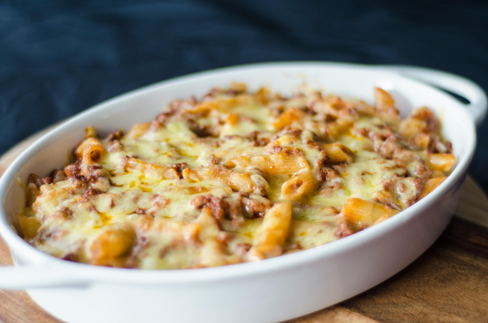

Baked Ziti

Description
This is a delicious meatless baked ziti recipe. One of my personal long-time comfort foods, I can't recommend this enough! I hope you enjoy it as much as I do.
Ingredients
- 16 oz ziti
- 24 oz jar of pasta sauce
- 15 oz ricotta cheese
- 8 oz shredded mozzarella cheese
- 1/4 cup parsley, chopped
- 1 egg, lightly beaten
- 1 tsp fresh oregano
- 1/2 tsp garlic powder
- 1/2 tsp salt
- 1/4 tsp pepper
- 3 tbsp grated parmesan
Steps
- Heat oven to 375 degrees.
- While oven is pre-heating, prepare ziti according to package directions and drain.
- In a large bowl, stir together: hot cooked ziti, half of the pasta sauce, ricotta cheese, mozzarella cheese, parsley, egg, oregano, garlic powder, salt, and pepper.
- Spoon mixture into a 13x9x2-inch baking dish. Top with remaining pasta sauce and sprinkle with parmesan cheese.
- Cover with foil. Bake 30 minutes or until hot and bubbly. Enjoy!
Return to Home Page